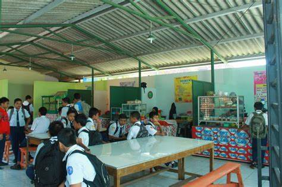

Kantin Wikrama adalah kantin yang sehat. Hal tersebut karena, SMK Wikrama melihat sebagian besar aktivitas peserta didik berada di lingkungan
sekolah, sehingga sudah menjadi tanggung jawab warga sekolah untuk memperhatikan kesehatan peserta didiknya, mulai dari makanan.
Berbagai aspek penunjang kesehatan peserta didik sangat diperhatikan, mulai dari cara pengolahan makan, sarana yang digunakan, penjamah (pelayan)
makanan, kebersihan tempat, serta perilaku konsumen. Menu makanan yang dijajakan di kantin sehat SMK Wikrama sangat beragam. Selain itu,
kantin SMK Wikrama harus memerhatikan beberapa ketentuan yang telah ditetapkan. Pertama tidak boleh menggunakan plastik atau kertas
(sesuai budaya Wikrama), dilarang menggunakan zat berbahaya dalam makanan (vetsin, pewarna tekstil, formalin dan sebagainya). Kemudian tidak
diperkenankan juga menjual makanan yang menggunakan bumbu perasa (rasa jagung, keju, dan sebagainya).umbu perasa (rasa jagung, keju, dan sebagainya).
